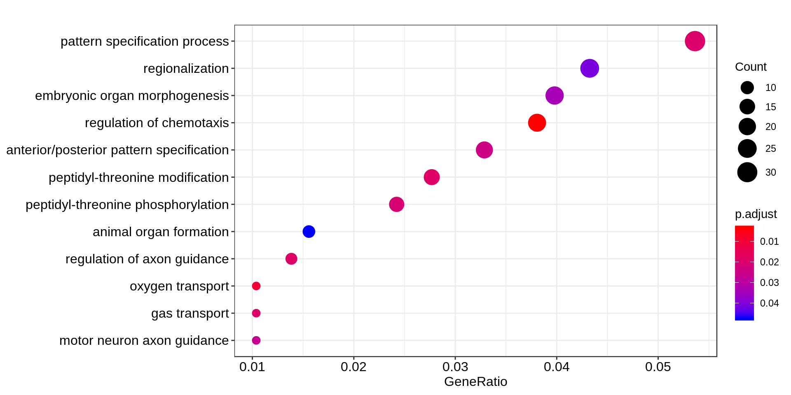
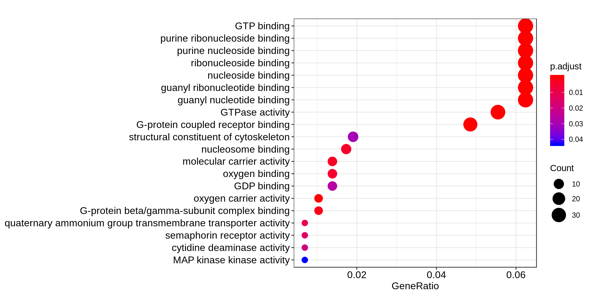
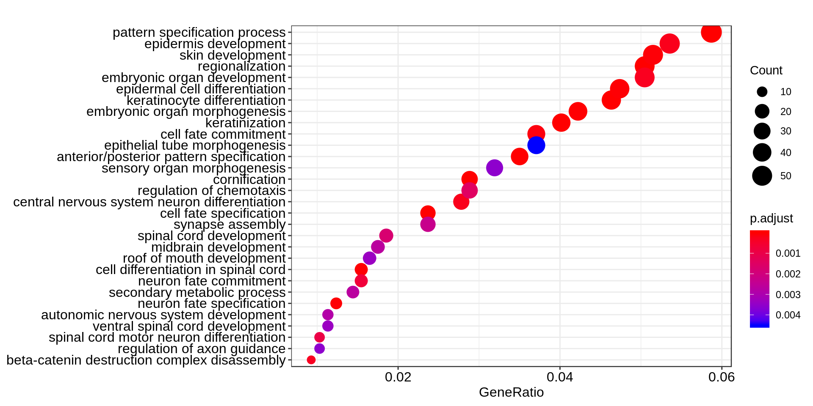
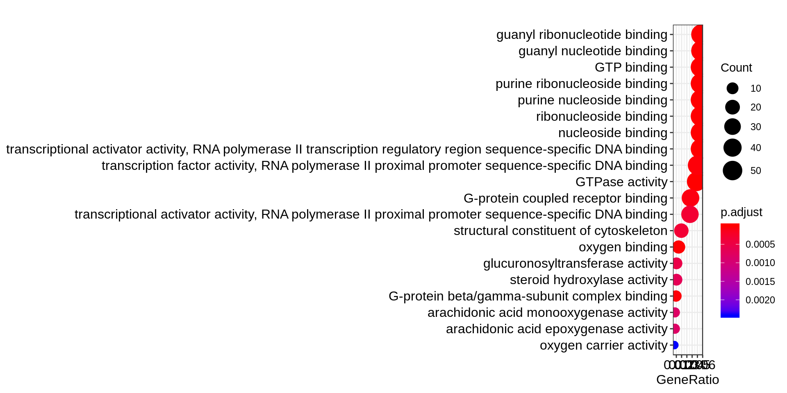
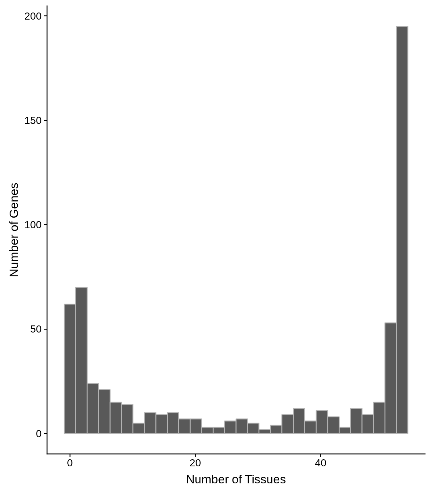
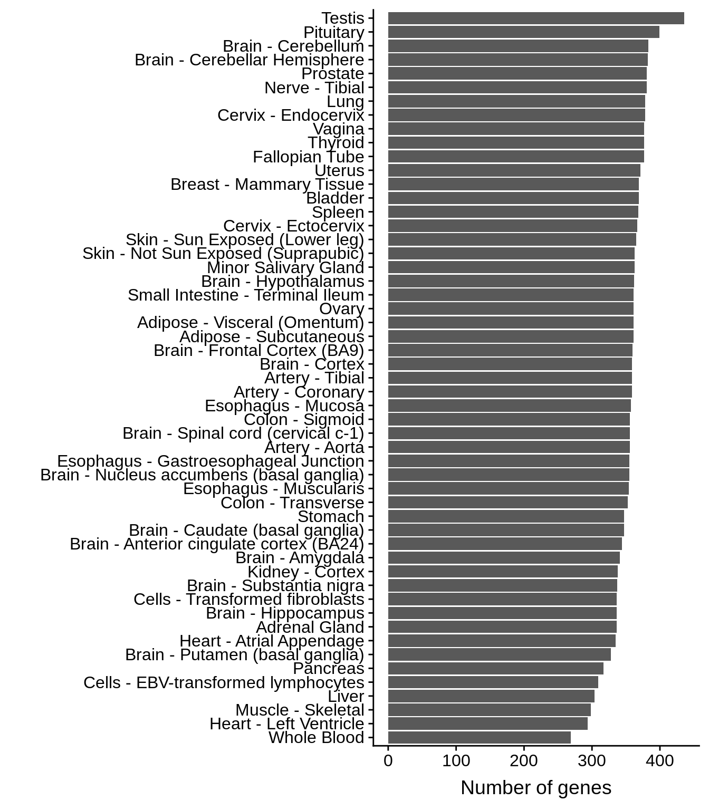
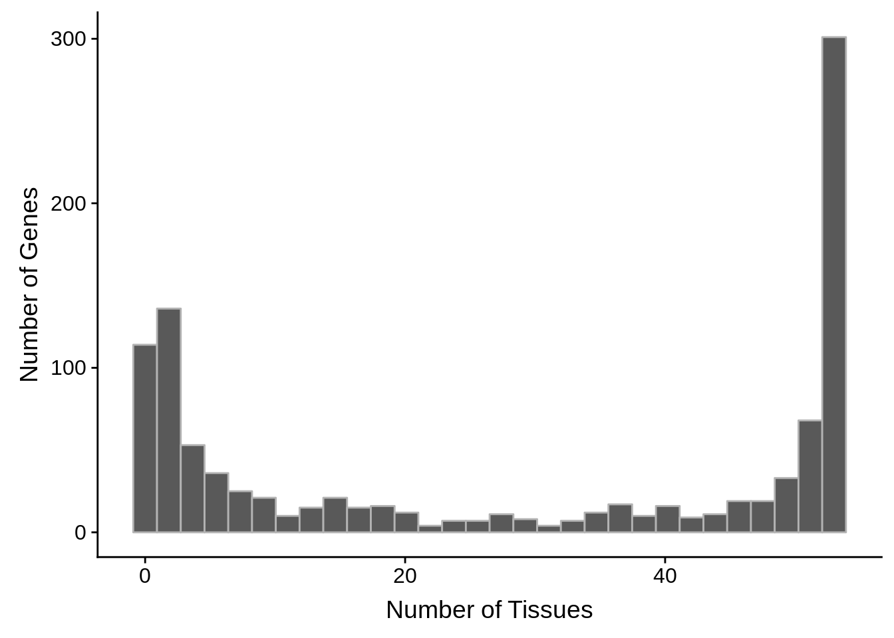
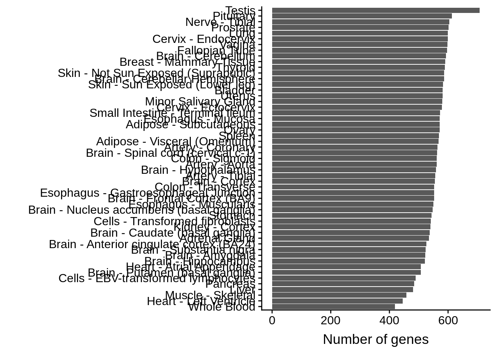

Last updated: 2018-11-05
workflowr checks: (Click a bullet for more information) ✖ R Markdown file: uncommitted changes
The R Markdown file has unstaged changes. To know which version of the R Markdown file created these results, you’ll want to first commit it to the Git repo. If you’re still working on the analysis, you can ignore this warning. When you’re finished, you can run wflow_publish to commit the R Markdown file and build the HTML.
✔ Environment: empty
Great job! The global environment was empty. Objects defined in the global environment can affect the analysis in your R Markdown file in unknown ways. For reproduciblity it’s best to always run the code in an empty environment.
✔ Seed:
set.seed(12345)
The command set.seed(12345) was run prior to running the code in the R Markdown file. Setting a seed ensures that any results that rely on randomness, e.g. subsampling or permutations, are reproducible.
✔ Session information: recorded
Great job! Recording the operating system, R version, and package versions is critical for reproducibility.
✔ Repository version: 8720c96
wflow_publish or wflow_git_commit). workflowr only checks the R Markdown file, but you know if there are other scripts or data files that it depends on. Below is the status of the Git repository when the results were generated:
Ignored files:
Ignored: .RData
Ignored: .Rhistory
Ignored: .Rproj.user/
Untracked files:
Untracked: analysis/working.R
Untracked: output/aging/conservative_events_over_time.svg
Untracked: output/aging/conservative_normalized_events.tsv
Untracked: output/aging/normalized_events.tsv
Untracked: output/aging/standard_events_over_time.svg
Untracked: output/aging/standard_normalized_events.tsv
Untracked: output/all_bp_genes.tsv
Untracked: output/all_mf_genes.tsv
Untracked: output/all_tissues.tsv
Untracked: output/analyze/
Untracked: output/conservative_data_table.tsv
Untracked: output/offspring_botable.tsv
Untracked: output/offspring_bptable.tsv
Untracked: output/offspring_mftable.tsv
Untracked: output/offspring_tissues.tsv
Untracked: output/parent_bptable.tsv
Untracked: output/parent_mftable.tsv
Untracked: output/parent_tissues.tsv
Untracked: output/standard_data_table.tsv
Unstaged changes:
Modified: analysis/aging.Rmd
Modified: analysis/analyze_frameshifts.Rmd
Modified: analysis/index.Rmd
Modified: analysis/parse_blast.Rmd
Deleted: output/aging/conservative_ages.svg
Deleted: output/aging/parent_offspring.svg
Deleted: output/aging/standard_ages.svg
Deleted: output/aging/standard_aging.svg
Modified: output/thirdset/standard_hits.tsv
| File | Version | Author | Date | Message |
|---|---|---|---|---|
| Rmd | 6001ee1 | Philipp Ross | 2018-10-16 | more stuff |
In order to analyze the frameshift events we’ve identified, we can perform gene ontology enrichment analyses and study the tissue expression of the genes.
# Necessary libraries in order to do this analysis
library(tidyverse)── Attaching packages ──────────────────────────────────────────────────────────────────────────────────────── tidyverse 1.2.1 ──✔ ggplot2 3.0.0 ✔ purrr 0.2.5
✔ tibble 1.4.2 ✔ dplyr 0.7.6
✔ tidyr 0.8.1 ✔ stringr 1.3.1
✔ readr 1.1.1 ✔ forcats 0.3.0── Conflicts ─────────────────────────────────────────────────────────────────────────────────────────── tidyverse_conflicts() ──
✖ dplyr::filter() masks stats::filter()
✖ dplyr::lag() masks stats::lag()library(cowplot)
Attaching package: 'cowplot'The following object is masked from 'package:ggplot2':
ggsavelibrary(org.Hs.eg.db)Loading required package: AnnotationDbiLoading required package: stats4Loading required package: BiocGenericsLoading required package: parallel
Attaching package: 'BiocGenerics'The following objects are masked from 'package:parallel':
clusterApply, clusterApplyLB, clusterCall, clusterEvalQ,
clusterExport, clusterMap, parApply, parCapply, parLapply,
parLapplyLB, parRapply, parSapply, parSapplyLBThe following objects are masked from 'package:dplyr':
combine, intersect, setdiff, unionThe following objects are masked from 'package:stats':
IQR, mad, sd, var, xtabsThe following objects are masked from 'package:base':
anyDuplicated, append, as.data.frame, basename, cbind,
colMeans, colnames, colSums, dirname, do.call, duplicated,
eval, evalq, Filter, Find, get, grep, grepl, intersect,
is.unsorted, lapply, lengths, Map, mapply, match, mget, order,
paste, pmax, pmax.int, pmin, pmin.int, Position, rank, rbind,
Reduce, rowMeans, rownames, rowSums, sapply, setdiff, sort,
table, tapply, union, unique, unsplit, which, which.max,
which.minLoading required package: BiobaseWelcome to Bioconductor
Vignettes contain introductory material; view with
'browseVignettes()'. To cite Bioconductor, see
'citation("Biobase")', and for packages 'citation("pkgname")'.Loading required package: IRangesLoading required package: S4Vectors
Attaching package: 'S4Vectors'The following objects are masked from 'package:dplyr':
first, renameThe following object is masked from 'package:tidyr':
expandThe following object is masked from 'package:base':
expand.grid
Attaching package: 'IRanges'The following objects are masked from 'package:dplyr':
collapse, desc, sliceThe following object is masked from 'package:purrr':
reduce
Attaching package: 'AnnotationDbi'The following object is masked from 'package:dplyr':
selectlibrary(clusterProfiler)clusterProfiler v3.8.1 For help: https://guangchuangyu.github.io/software/clusterProfiler
If you use clusterProfiler in published research, please cite:
Guangchuang Yu, Li-Gen Wang, Yanyan Han, Qing-Yu He. clusterProfiler: an R package for comparing biological themes among gene clusters. OMICS: A Journal of Integrative Biology. 2012, 16(5):284-287.
Attaching package: 'clusterProfiler'The following object is masked from 'package:purrr':
simplifyconservative_hits <- readr::read_tsv("../output/thirdset/conservative_reciprocal_best_hits.tsv",col_names=T)Parsed with column specification:
cols(
query = col_character(),
subject = col_character()
)conservative_genes <- conservative_hits$query
# we need the EntrzIDs of these genes to use enrichGO
# use the biological ID translator function for this
conservative_gene_df <- clusterProfiler::bitr(conservative_genes, fromType = "ENSEMBL",
toType = c("ENSEMBL", "SYMBOL", "ENTREZID"),
OrgDb = org.Hs.eg.db)'select()' returned 1:many mapping between keys and columnsWarning in clusterProfiler::bitr(conservative_genes, fromType =
"ENSEMBL", : 0.16% of input gene IDs are fail to map...conservative_gobp <- clusterProfiler::enrichGO(
gene = conservative_gene_df$ENTREZID,
OrgDb = org.Hs.eg.db,
ont = "BP",
pAdjustMethod = "BH",
pvalueCutoff = 0.05,
qvalueCutoff = 0.10)
conservative_bpcount <- tibble::tibble(GOID=conservative_gobp@result$ID,
`Biological Process`=conservative_gobp@result$Description,
`Number of genes`=conservative_gobp@result$Count,
Genes=conservative_gobp@result$geneID) %>%
dplyr::arrange(desc(`Number of genes`)) %>%
tidyr::separate(col=Genes,into=paste0(rep("gene",31),1:31),sep="/") %>%
tidyr::gather(key=Number,value=ENTREZID,-`Biological Process`,-`Number of genes`,-GOID) %>%
dplyr::inner_join(conservative_gene_df) %>%
dplyr::select(-Number)Warning: Expected 31 pieces. Missing pieces filled with `NA` in 4192
rows [2, 3, 4, 5, 6, 7, 8, 9, 10, 11, 12, 13, 14, 15, 16, 17, 18, 19, 20,
21, ...].Joining, by = "ENTREZID"readr::write_tsv(x=conservative_bpcount,path="../output/analyze/conservative_bpcount_table.tsv")
conservative_gomf <- clusterProfiler::enrichGO(
gene = conservative_gene_df$ENTREZID,
OrgDb = org.Hs.eg.db,
ont = "MF",
pAdjustMethod = "BH",
pvalueCutoff = 0.05,
qvalueCutoff = 0.10)
conservative_mfcount <- tibble::tibble(GOID=conservative_gomf@result$ID,
`Molecular function`=conservative_gomf@result$Description,
`Number of genes`=conservative_gomf@result$Count,
Genes=conservative_gomf@result$geneID) %>%
dplyr::arrange(desc(`Number of genes`)) %>%
tidyr::separate(col=Genes,into=paste0(rep("gene",31),1:31),sep="/") %>%
tidyr::gather(key=Number,value=ENTREZID,-`Molecular function`,-`Number of genes`,-GOID) %>%
dplyr::inner_join(conservative_gene_df) %>%
dplyr::select(-Number)Warning: Expected 31 pieces. Additional pieces discarded in 8 rows [1, 2,
3, 4, 5, 6, 7, 8].Warning: Expected 31 pieces. Missing pieces filled with `NA` in 721 rows
[9, 10, 11, 12, 13, 14, 15, 16, 17, 18, 19, 20, 21, 22, 23, 24, 25, 26, 27,
28, ...].Joining, by = "ENTREZID"readr::write_tsv(x=conservative_mfcount,path="../output/analyze/conservative_mfcount_table.tsv")
# Plot these enrichments
g <- clusterProfiler::dotplot(conservative_gobp,showCategory=30)
cowplot::save_plot("../output/analyze/conservative_biological_process_go_enrichment.png",plot=g)
cowplot::save_plot("../output/analyze/conservative_biological_process_go_enrichment.svg",plot=g)
print(g)
g <- clusterProfiler::dotplot(conservative_gomf,showCategory=20)
cowplot::save_plot("../output/analyze/conservative_molecular_function_go_enrichment.png",plot=g)
cowplot::save_plot("../output/analyze/conservative_molecular_function_go_enrichment.svg",plot=g)
print(g)
standard_hits <- readr::read_tsv("../output/thirdset/standard_hits.tsv",col_names=T)Parsed with column specification:
cols(
query = col_character(),
subject = col_character()
)standard_genes <- dplyr::union(standard_hits$query,standard_hits$subject)
# we need the EntrzIDs of these genes to use enrichGO
# use the biological ID translator function for this
standard_gene_df <- clusterProfiler::bitr(standard_genes, fromType = "ENSEMBL",
toType = c("ENSEMBL", "SYMBOL", "ENTREZID"),
OrgDb = org.Hs.eg.db)'select()' returned 1:many mapping between keys and columnsWarning in clusterProfiler::bitr(standard_genes, fromType = "ENSEMBL",
toType = c("ENSEMBL", : 0.19% of input gene IDs are fail to map...standard_gobp <- clusterProfiler::enrichGO(
gene = standard_gene_df$ENTREZID,
OrgDb = org.Hs.eg.db,
ont = "BP",
pAdjustMethod = "BH",
pvalueCutoff = 0.05,
qvalueCutoff = 0.10)
standard_bpcount <- tibble::tibble(GOID=standard_gobp@result$ID,
`Biological Process`=standard_gobp@result$Description,
`Number of genes`=standard_gobp@result$Count,
Genes=standard_gobp@result$geneID) %>%
dplyr::arrange(desc(`Number of genes`)) %>%
tidyr::separate(col=Genes,into=paste0(rep("gene",87),1:87),sep="/") %>%
tidyr::gather(key=Number,value=ENTREZID,-`Biological Process`,-`Number of genes`,-GOID) %>%
dplyr::inner_join(standard_gene_df) %>%
dplyr::select(-Number)Warning: Expected 87 pieces. Missing pieces filled with `NA` in 4795
rows [1, 2, 3, 4, 5, 6, 7, 8, 9, 10, 11, 12, 13, 14, 15, 16, 17, 18, 19,
20, ...].Joining, by = "ENTREZID"readr::write_tsv(x=standard_bpcount,path="../output/analyze/standard_bpcount_table.tsv")
standard_gomf <- clusterProfiler::enrichGO(
gene = standard_gene_df$ENTREZID,
OrgDb = org.Hs.eg.db,
ont = "MF",
pAdjustMethod = "BH",
pvalueCutoff = 0.05,
qvalueCutoff = 0.10)
standard_mfcount <- tibble::tibble(GOID=standard_gomf @result$ID,
`Molecular function`=standard_gomf @result$Description,
`Number of genes`=standard_gomf @result$Count,
Genes=standard_gomf @result$geneID) %>%
dplyr::arrange(desc(`Number of genes`)) %>%
tidyr::separate(col=Genes,into=paste0(rep("gene",94),1:94),sep="/") %>%
tidyr::gather(key=Number,value=ENTREZID,-`Molecular function`,-`Number of genes`,-GOID) %>%
dplyr::inner_join(standard_gene_df) %>%
dplyr::select(-Number)Warning: Expected 94 pieces. Missing pieces filled with `NA` in 818
rows [1, 2, 3, 4, 5, 6, 7, 8, 9, 10, 11, 12, 13, 14, 15, 16, 17, 18, 19,
20, ...].Joining, by = "ENTREZID"readr::write_tsv(x=standard_mfcount,path="../output/analyze/standard_mfcount_table.tsv")
# Plot these enrichments
g <- clusterProfiler::dotplot(standard_gobp, showCategory=30)
cowplot::save_plot("../output/analyze/standard_biological_process_go_enrichment.png", plot=g)
cowplot::save_plot("../output/analyze/standard_biological_process_go_enrichment.svg", plot=g)
print(g)
g <- clusterProfiler::dotplot(standard_gomf, showCategory=20)
cowplot::save_plot("../output/analyze/standard_molecular_function_go_enrichment.png", plot=g)
cowplot::save_plot("../output/analyze/standard_molecular_function_go_enrichment.svg", plot=g)
print(g)
tpm_threshold <- 2
gtex <- readr::read_tsv("../data/GTEx_Analysis_2016-01-15_v7_RNASeQCv1.1.8_gene_median_tpm.gct",skip=2,col_names=T) %>%
dplyr::select(-Description) %>%
tidyr::gather(key = tissue, value = exp, -gene_id)Parsed with column specification:
cols(
.default = col_double(),
gene_id = col_character(),
Description = col_character()
)See spec(...) for full column specifications.# remove annoying ".#" parts of each gene ID
gtex$gene_id <- sapply(stringr::str_split(gtex$gene_id,"[.]"), function(x) {x[1]})
# only include genes in our gene list
fgtex <- gtex %>% filter(gene_id %in% conservative_genes)
# group by gene ID to create histogram of how many tissues these genes are
# expressed in
gene_expression <- fgtex %>%
dplyr::group_by(gene_id) %>%
dplyr::summarise(n = sum(exp > tpm_threshold))
g <- ggplot(gene_expression, aes(x=n)) +
geom_histogram(color="grey70") +
xlab("Number of Tissues") +
ylab("Number of Genes")
cowplot::save_plot("../output/analyze/conservative_gene_expression_distribution.png",plot=g)`stat_bin()` using `bins = 30`. Pick better value with `binwidth`.cowplot::save_plot("../output/analyze/conservative_gene_expression_distribution.svg",plot=g)`stat_bin()` using `bins = 30`. Pick better value with `binwidth`.print(g)`stat_bin()` using `bins = 30`. Pick better value with `binwidth`.
# group by tissue to create a table of how many genes are express in each
# tissue type
tissue_expression <- fgtex %>%
dplyr::filter(exp > tpm_threshold) %>%
dplyr::group_by(tissue) %>%
dplyr::summarise(n = n()) %>%
dplyr::arrange(desc(n))
g <- ggplot(tissue_expression, aes(x=reorder(tissue, n),y=n)) +
geom_bar(stat="identity") +
coord_flip() +
ylab("Number of genes") +
xlab("")
cowplot::save_plot("../output/analyze/conservative_tissue_expression_barplot.png",plot=g)
cowplot::save_plot("../output/analyze/conservative_tissue_expression_barplot.svg",plot=g)
print(g)
# only include genes in our gene list
fgtex <- gtex %>% filter(gene_id %in% standard_genes)
# group by gene ID to create histogram of how many tissues these genes are
# expressed in
gene_expression <- fgtex %>%
dplyr::group_by(gene_id) %>%
dplyr::summarise(n = sum(exp > tpm_threshold))
g <- ggplot(gene_expression, aes(x=n)) +
geom_histogram(color="grey70") +
xlab("Number of Tissues") +
ylab("Number of Genes")
cowplot::save_plot("../output/analyze/standard_gene_expression_distribution.png",plot=g)`stat_bin()` using `bins = 30`. Pick better value with `binwidth`.cowplot::save_plot("../output/analyze/standard_gene_expression_distribution.svg",plot=g)`stat_bin()` using `bins = 30`. Pick better value with `binwidth`.print(g)`stat_bin()` using `bins = 30`. Pick better value with `binwidth`.
# group by tissue to create a table of how many genes are express in each
# tissue type
tissue_expression <- fgtex %>%
dplyr::filter(exp > tpm_threshold) %>%
dplyr::group_by(tissue) %>%
dplyr::summarise(n = n()) %>%
dplyr::arrange(desc(n))
g <- ggplot(tissue_expression, aes(x=reorder(tissue, n),y=n)) +
geom_bar(stat="identity") +
coord_flip() +
ylab("Number of genes") +
xlab("")
cowplot::save_plot("../output/analyze/standard_tissue_expression_barplot.png",plot=g)
cowplot::save_plot("../output/analyze/standard_tissue_expression_barplot.svg",plot=g)
print(g)
sessionInfo()R version 3.5.0 (2018-04-23)
Platform: x86_64-pc-linux-gnu (64-bit)
Running under: Gentoo/Linux
Matrix products: default
BLAS: /usr/local/lib64/R/lib/libRblas.so
LAPACK: /usr/local/lib64/R/lib/libRlapack.so
locale:
[1] LC_CTYPE=en_US.UTF-8 LC_NUMERIC=C
[3] LC_TIME=en_US.UTF-8 LC_COLLATE=en_US.UTF-8
[5] LC_MONETARY=en_US.UTF-8 LC_MESSAGES=en_US.UTF-8
[7] LC_PAPER=en_US.UTF-8 LC_NAME=C
[9] LC_ADDRESS=C LC_TELEPHONE=C
[11] LC_MEASUREMENT=en_US.UTF-8 LC_IDENTIFICATION=C
attached base packages:
[1] parallel stats4 stats graphics grDevices utils datasets
[8] methods base
other attached packages:
[1] gdtools_0.1.7 bindrcpp_0.2.2 clusterProfiler_3.8.1
[4] org.Hs.eg.db_3.6.0 AnnotationDbi_1.42.1 IRanges_2.14.12
[7] S4Vectors_0.18.3 Biobase_2.40.0 BiocGenerics_0.26.0
[10] cowplot_0.9.3 forcats_0.3.0 stringr_1.3.1
[13] dplyr_0.7.6 purrr_0.2.5 readr_1.1.1
[16] tidyr_0.8.1 tibble_1.4.2 ggplot2_3.0.0
[19] tidyverse_1.2.1
loaded via a namespace (and not attached):
[1] nlme_3.1-137 enrichplot_1.0.2 lubridate_1.7.4
[4] bit64_0.9-7 httr_1.3.1 UpSetR_1.3.3
[7] rprojroot_1.3-2 tools_3.5.0 backports_1.1.2
[10] R6_2.3.0 DBI_1.0.0 lazyeval_0.2.1
[13] colorspace_1.3-2 withr_2.1.2 tidyselect_0.2.4
[16] gridExtra_2.3 bit_1.1-14 compiler_3.5.0
[19] git2r_0.23.0 cli_1.0.1 rvest_0.3.2
[22] xml2_1.2.0 labeling_0.3 scales_1.0.0
[25] ggridges_0.5.1 digest_0.6.17 svglite_1.2.1
[28] rmarkdown_1.10 DOSE_3.6.1 R.utils_2.7.0
[31] pkgconfig_2.0.2 htmltools_0.3.6 rlang_0.2.2
[34] readxl_1.1.0 rstudioapi_0.8 RSQLite_2.1.1
[37] farver_1.0 bindr_0.1.1 jsonlite_1.5
[40] BiocParallel_1.14.2 GOSemSim_2.6.2 R.oo_1.22.0
[43] magrittr_1.5 GO.db_3.6.0 Matrix_1.2-14
[46] Rcpp_0.12.19 munsell_0.5.0 viridis_0.5.1
[49] R.methodsS3_1.7.1 stringi_1.2.4 whisker_0.3-2
[52] yaml_2.2.0 ggraph_1.0.2 MASS_7.3-49
[55] plyr_1.8.4 qvalue_2.12.0 grid_3.5.0
[58] blob_1.1.1 ggrepel_0.8.0 DO.db_2.9
[61] crayon_1.3.4 lattice_0.20-35 haven_1.1.2
[64] splines_3.5.0 hms_0.4.2 knitr_1.20
[67] pillar_1.3.0 igraph_1.2.2 fgsea_1.6.0
[70] reshape2_1.4.3 fastmatch_1.1-0 glue_1.3.0
[73] evaluate_0.11 data.table_1.11.8 modelr_0.1.2
[76] tweenr_1.0.0 cellranger_1.1.0 gtable_0.2.0
[79] assertthat_0.2.0 ggforce_0.1.3 broom_0.5.0
[82] viridisLite_0.3.0 rvcheck_0.1.1 memoise_1.1.0
[85] units_0.6-1 workflowr_1.1.1 This reproducible R Markdown analysis was created with workflowr 1.1.1